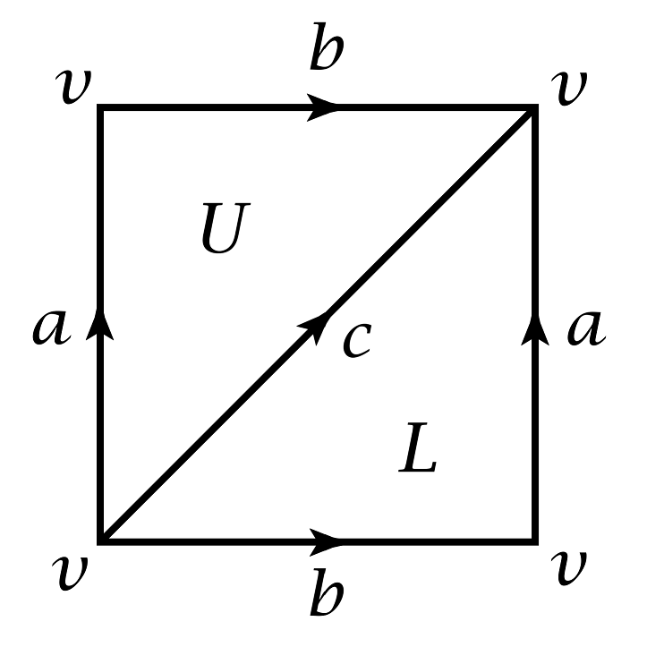

To use this calculator, consider a shape (cell complex) and give a name to each face (cell) of the shape. For example, take this diagram of a Torus from Allen Hatcher's text Algebraic Topology (p. 102):  In the first input box below, list the faces of each dimension. In the second input box, specify the boundary of each face in terms of the cells one dimension lower. The output box will list the homology of the resulting shape, an algebraic structure representing how the holes in each dimension fit together.
The "Cell Names by Dimension" box should consist of a number of lines, each line consisting of an integer, followed by a colon, followed by a comma-separated list of names in that dimension. Cell names can include ascii letters or digits or underscores, but cannot start with a digit.
Each line in the "Boundary" box
should consist of a cell name, followed by a colon,
followed by a chain of cells one dimension lower.
A chain consists of a list of cell names,
perhaps preceded by integer coefficients,
separated by +
and - signs.
Semicolons (;) are treated
the same as line breaks, so
multiple cell boundaries
can be specified in the same physical line.
Whitespace other than line breaks is generally ignored.
Click through the "Example Inputs" buttons to see various possible example inputs.
sage.topology.simplicial_complex_examples
For an introduction to homology, see Hatcher's free textbook. Homology is defined as "(kerel of boundary) modulo (image of boundary)", often using the terminology "cycles modulo boundaries". More explicitly, if we define Ci to be chains (i.e. formal sums) of i-dimensional-cells, and let ∂i : Ci → Ci-1 be the Abelian group homomorphism that maps a cell to its boundary, then we define Hi to be the quotient (ker ∂i) / (im ∂i+1) of Abelian groups.
Suppose that x, y, z are 1-cells and each with boundary p − q and that F is a 2-cell with boundary 2x − 2y. We'll compute H1.
First, ker ∂1 is
But since im ker ∂2 is generated by 2x − 2y = 2u, this shows that H1 = (ker ∂1) / (im ∂2) has the Abelian group presentation 〈 u, v | 2u = 0 〉, so H1 ≅ ℤ/2ℤ ⊕ ℤ. Click to compute Example 1.
It's always true that ker ∂i is a free Abelian group because it's a subgroup of the free Abelian group Ci. This lines up with what we saw in Example 1. So beyond translating into new variables like in Example 1, the heart of the calculator must manipulate Abelian group presentations with several potentially complicated relations to get to a normalized form. We can do this with the Abelian group version of Tietze tranformations. Here's an example:
Click to compute the equivalent of Example 2. Generalizing from this example, you could treat this page as an Abelian group simplifier!